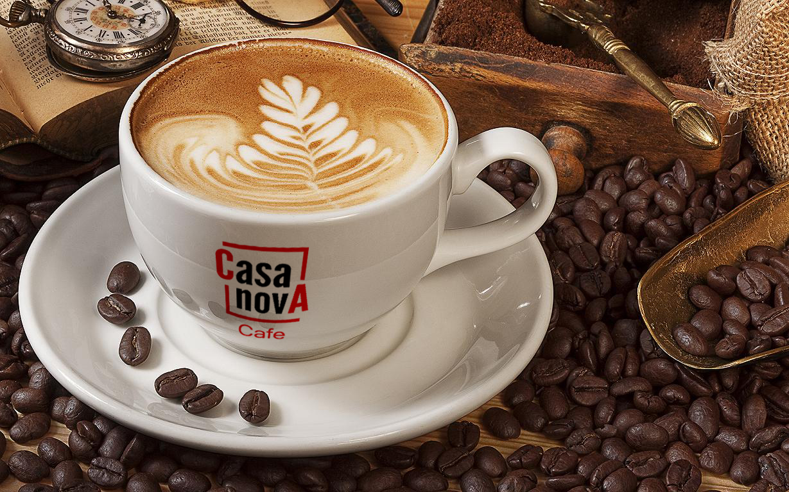

- Capuchino
-
Cappuccino (phát âm tiếng Ý: [kapputˈtʃino]; đọc như ca-pu-chi-nô) là một cách pha chế cà phê của Ý. Một cà phê cappuccino bao gồm ba phần đều nhau: cà phê espresso pha với một lượng nước gấp đôi (espresso lungo), sữa nóng và sữa sủi bọt. Để hoàn thiện khẩu vị, người ta thường rải lên trên tách cà phê cappuccino là bột ca cao và/hay bột quế. Trong các quán cà phê ở Ý, người đứng bán ở bar (barista) thường dùng khuôn hay dùng thìa và bằng cách khuấy điệu nghệ trong lúc rắc bột để tạo thành các hình nghệ thuật.
-

-
Tên gọi của loại đồ uống này được cho là xuất phát từ tên gọi các nhà tu dòng Capuchin (tiếng La tinh: Ordo Fratrum minorum Cappucinorum), màu áo thụng của các nhà tu này tương tự như tông màu nâu của một tách cà phê cappuccino hoàn hảo. Mũ của chiếc áo tu này được gọi trong tiếng Ý là cappuccio.[1]